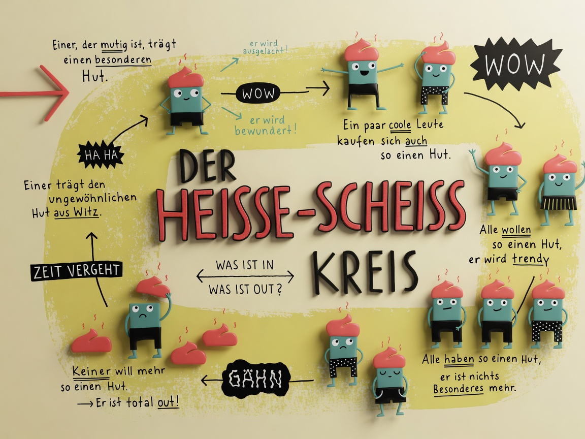

Real
◉
Funk
TOP THEMEN
MEHR
MELDUNGEN
ARCHIV
UNTERSTÜTZEN
← Alle Bilder des Tages
BILD DES TAGES · 13.09.2026
Trends – erklärt
Teilen
Teilen …
WhatsApp
X
Facebook
E-Mail
Link kopieren

Zugesandte Illustration.
← Älter · 12.09.2026
Egal wo du bist...
Alle Bilder
Jünger
Ende der Reihe